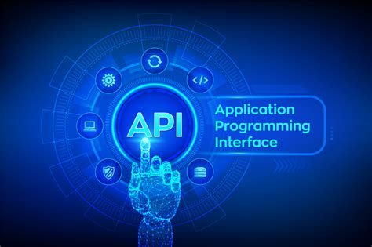

This is the first post in a Quarto blog. Welcome!

REST API
It Is a web service based on REST architecture that allows communication between different systems.
It uses HTTP requests to GET, PUT, POST, and DELETE data. REST API is often used in web applications to access data from a server.
API Client
An API Client is a software program that makes it easy to work with Application Programming Interfaces (APIs).
It can be used to access data or perform actions on behalf of a user.
API Clients are often used by developers to test APIs.
API Resource
An API resource is a specific type of data that can be accessed by an application programming interface (API). API Server
An API server allows two different systems to communicate with each other.
In most cases, an API server enables a web application to interact with a database.
API Scalability
API scalability refers to the ability of an API to handle increased loads of data or traffic without adversely affecting performance.
A scalable API can handle large amounts of data and traffic without compromising speed or functionality.
Stateless API
A stateless API is an API that does not maintain a state between requests.
Each request is independent of any other request, and state information is not stored on the server.
API Cache
An API is cacheable if the data it returns can be stored in a cache.
Cache allows the same data to be returned for multiple requests without having to fetch it from the original source each time.
Caching can improve performance.
Layered System
A layered system, means that each layer is responsible for a specific set of tasks.
The most common layers are the presentation layer, the business logic layer, and the data access layer.